Objetivo:
• Investigar sobre una enfermedad infecciosa, analizar y organizar la información para luego construir una infografía.
Proyecto Ciencias para la Ciudadanía 3° Medio Infografías
Objetivo:
• Investigar sobre una enfermedad infecciosa, analizar y organizar la información para luego construir una infografía.
| PROYECTOS | ||
|
Paula Zúñiga 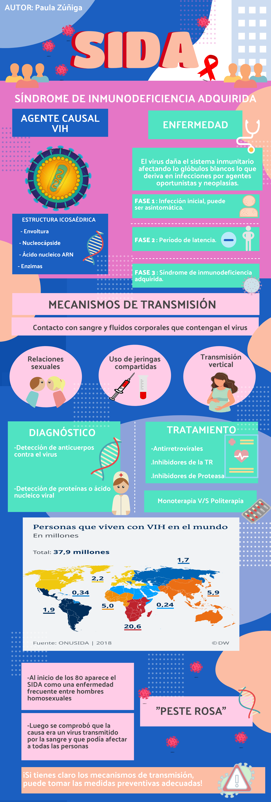 |
Paola Chala 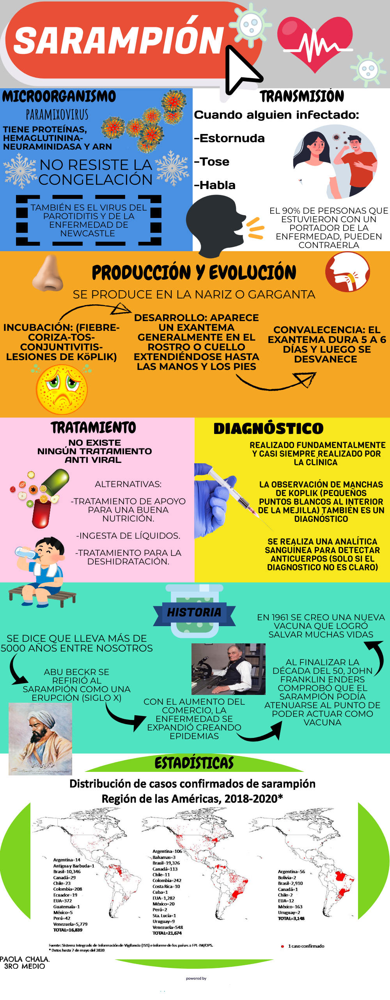 |
|
|
Iñaki Salcedo 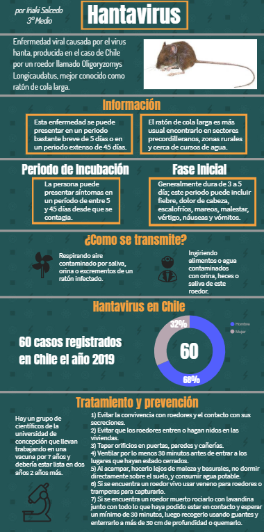 |
Alberto Teixido y Raimundo Garreton 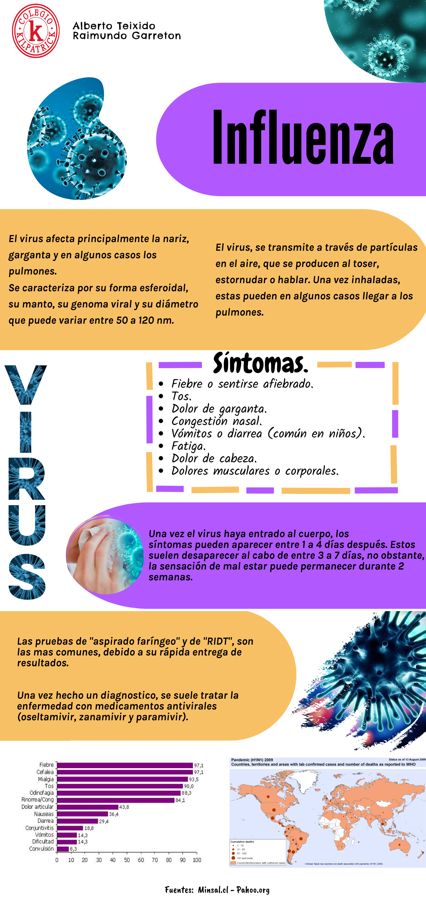 |
|
|
Sofía Barra y Diego Mutis 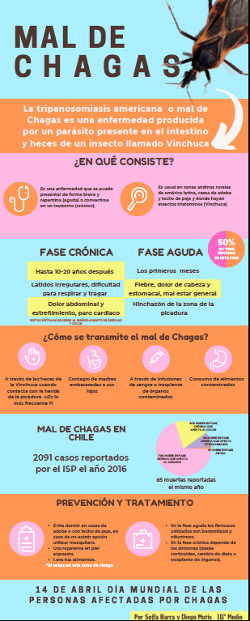 |
Mateo Gaziano y Joaquín Corral 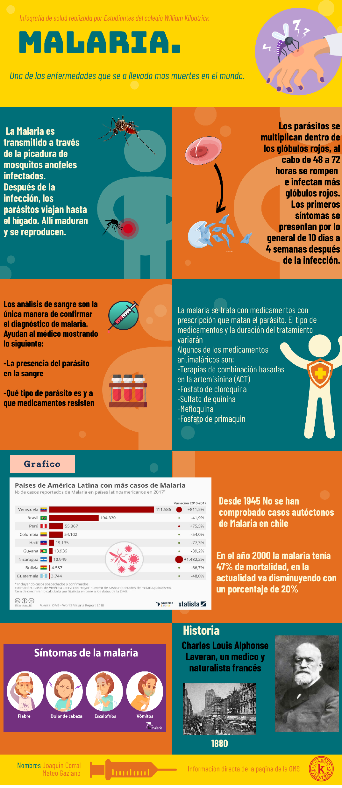 |
|
|
Vicente Araya 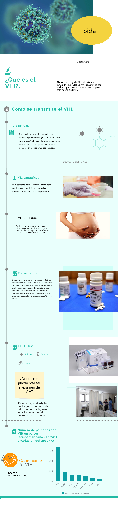 |
Tomás Renard 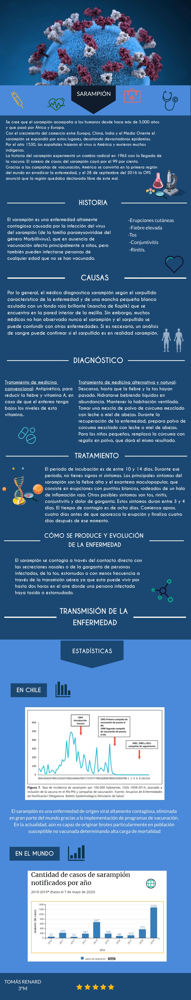 |
|
|
Nicolás Nalegach y Felipe Justiniano 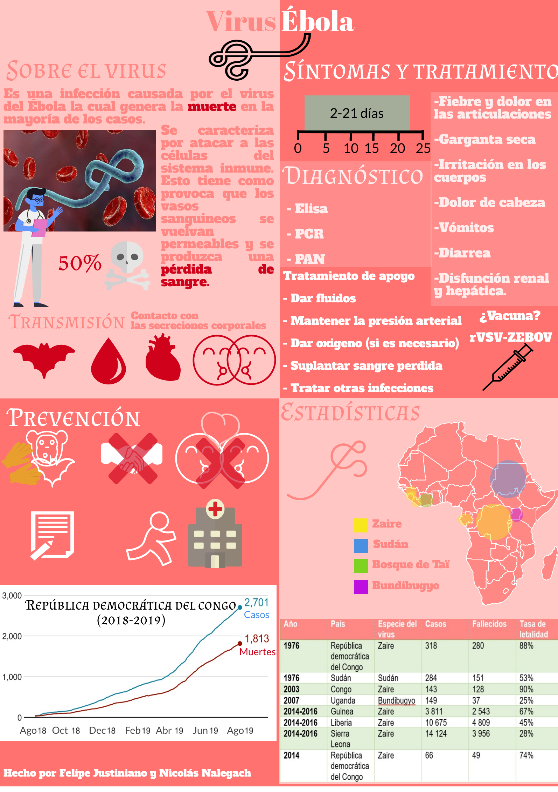 |
Alberto Pini 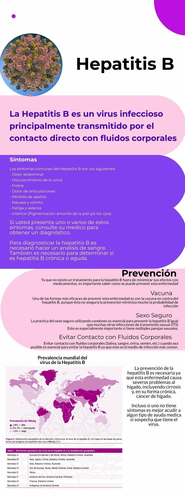 |
|
|
Sofía Quintiliani 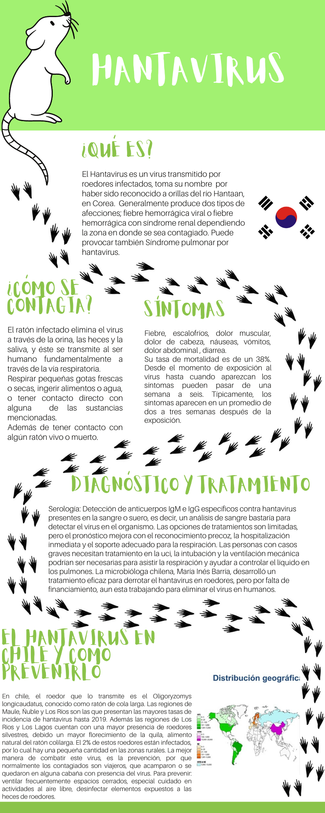 |
||
Agradecemos su dedicación y compromiso en este proyecto, felicitaciones por su excelente trabajo.